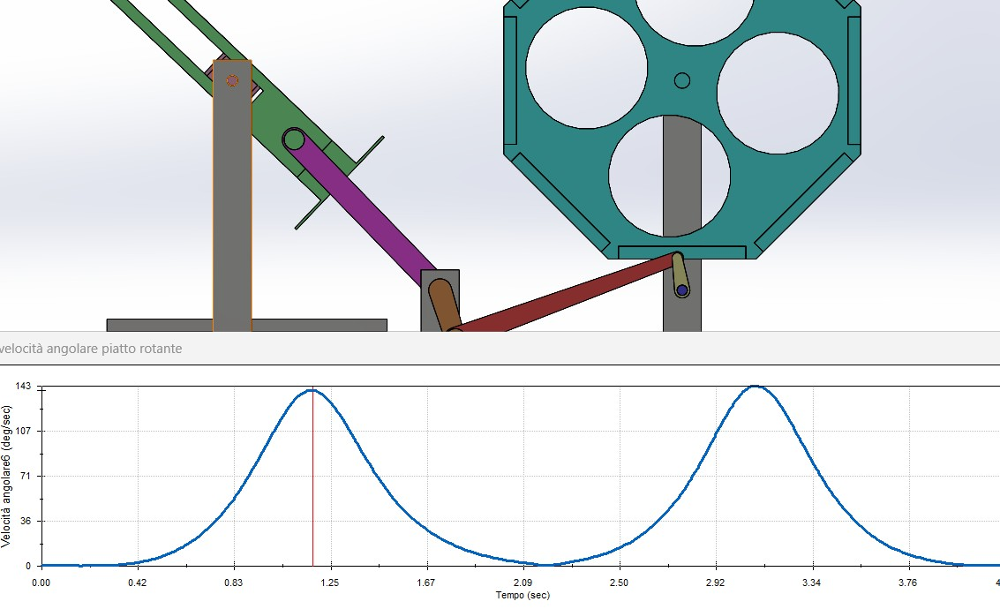

Il mio contributo
Ho curato la modellazione CAD, la simulazione in SolidWorks Motion e la produzione e interpretazione dei grafici cinematici. Ho dimensionato il quadrilatero articolato e il meccanismo di Ginevra insieme al mio collega.
La sfida progettuale
Realizzare un modello virtuale di un meccanismo per trasferire oggetti e studiarne traiettorie, velocità e accelerazioni nei componenti principali.
Metodo e decisioni
Un solo azionamento, movimenti coordinati
Il quadrilatero e il meccanismo di Ginevra sincronizzano piatto e cassa rotante. Ho analizzato il movimento in SolidWorks Motion a 15 giri/min.
Leggere il ciclo cinematico
I grafici permettono di collegare traiettorie, velocità e accelerazioni alle fasi di prelievo e posa. Le irregolarità del contatto richiedono cautela nell’interpretazione delle accelerazioni.
- Dimensionamento del quadrilatero articolato e modellazione dell'assieme in SolidWorks.
- Studio del movimento sincronizzato del piatto e della cassa rotante, con meccanismo di Ginevra a otto asole.
- Analisi in Motion a 15 giri/min e restituzione di grafici e traiettorie per piatto, rocker e croce di Malta.
Risultati
Il modello descrive un sistema a un grado di libertà. L'analisi documenta un movimento intermittente della croce di Malta di 45 gradi e una rotazione di 90 gradi del piatto, coordinati dal quadrilatero articolato.

Limiti e sviluppi
Studio di cinematica su modello virtuale. La presentazione segnala irregolarità nell'accelerazione dovute alla modellazione del contatto; non si tratta di una validazione fisica del meccanismo.
Immagini tratte dagli elaborati del team. I contributi personali sono riportati sulla base delle attività confermate dall’autore.